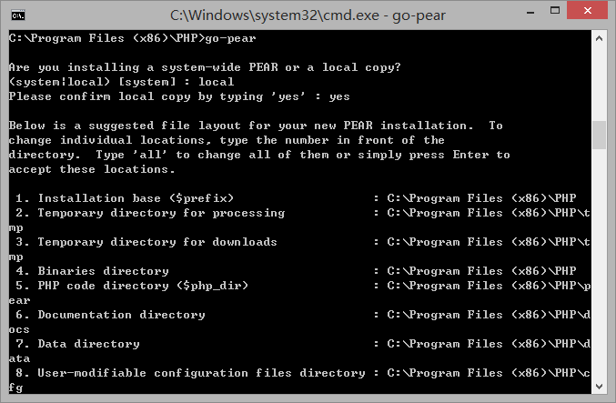

PEAR，PHP扩展和应用库，包含了程序员们为了达到不同目标而写的代码。总而言之，通常在某个领域精通的程序员，将一些复杂的代码用一种易用的形式呈现出来，使你能够通过几行简单的命令实现功能强大的脚本。
PEAR包含两种预先写好的代码：PECL代码和PHP代码。PECL代码是用C编写的同外部库进行交互的扩展。PECL里面的扩展通常被认为是很有用的，但是不够流行，使用频率不够高。大部分PEAR是由PHP代码写的，帮你完成各项工作，它的优势是你可以在任何PHP服务器上使用而无需启用任何扩展或重新编译PHP。
PEAR中最有名的一个包叫做PEAR::DB，为读写数据库提供面向对象的、数据库独立的框架。后面将进行深入说明。
PHP内包含一个配置PEAR的工具“go-pear”。可以在命令行中运行go-pear，按照提示进行下一步就可以了。Windows用户需要将路径更改到PHP的安装路径下，如c:\php。

一旦在系统上安装了PEAR，你就可以看到pear命令，也就可以从PHP里下载安装新的PEAR模块了。
作者说明：曾经有人写邮件问我，问什么我的代码示例中很少使用PEAR。有两个原因：其一，如果我告诉你怎么使用PEAR，你就不会自己学着去写了。这有时候是件不好的事情。当然，我不想去重新操作C++标准库，但如果自己动手的话，我想你会学到很多东西。其二，同时也是最重要的，PEAR在很多web服务器上都没有安装，即便安装了，有时候也不一定更新。所以，即使我在实例中用了PEAR，如果你的服务器提供商不支持的话，你也没法使用。这也是我很少使用PEAR的原因了——对不起。